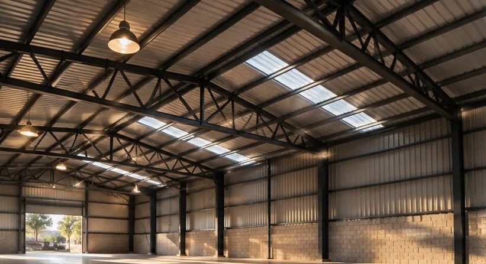
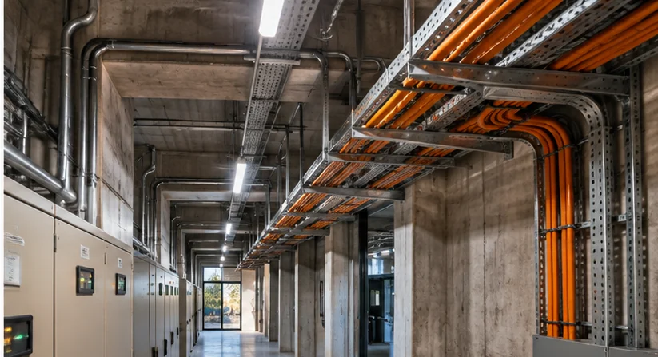
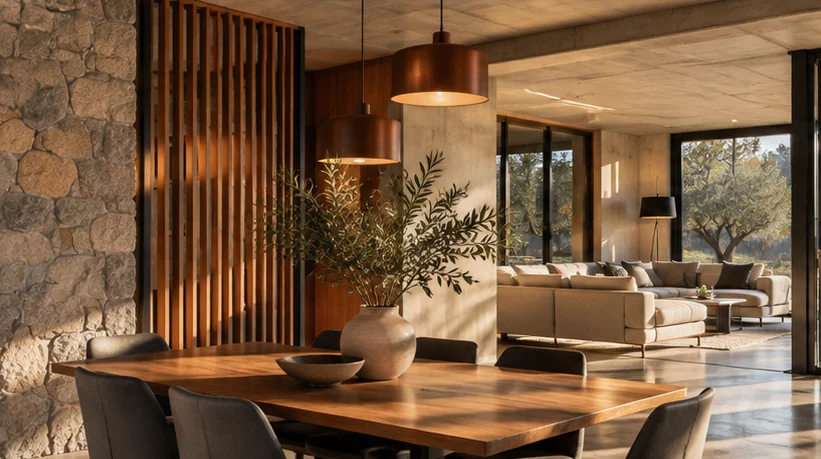

/ 01

CONSTRUCCIÓN Y OBRA CIVIL
ESTRUCTURAS QUE RESUELVEN.
Obras, remodelaciones, estructuras, cubiertas y coordinación de especialidades, según los requerimientos de cada proyecto.
Ver escenarios relacionadosNI UNA SOLA DISCIPLINA. NI UNA SOLA ESCALA.
Desde una intervención puntual hasta un proyecto de mayor complejidad: integramos la mirada técnica y el diseño para encontrar la respuesta adecuada a cada necesidad.
Diseño y ejecución no son mundos separados. Son partes de un mismo proceso.
02 / ÁREAS DE TRABAJO
Tres ejes complementarios, una forma integral de pensar cada intervención.

Obras, remodelaciones, estructuras, cubiertas y coordinación de especialidades, según los requerimientos de cada proyecto.
Ver escenarios relacionados
Instalaciones eléctricas e intervenciones técnicas en contextos residenciales, comerciales, institucionales e industriales.
Ver escenarios relacionados
Diseño de espacios, interiores y propuestas que integran uso, materialidad y sensibilidad arquitectónica, con profesionales habilitados cuando corresponda.
Ver escenarios relacionadosLos campos de acción orientan las posibilidades de colaboración. El alcance concreto de cada servicio se definirá para cada obra.
04 / EXPLORACIÓN VISUAL
Cuatro escenarios visuales de las áreas en las que podemos enfocar el sitio.
Todas las imágenes de esta sección fueron generadas con inteligencia artificial para evaluar la estética del sitio. No representan proyectos realizados por AB Construcciones.
Proceso ilustrativo, pendiente de validación con el equipo técnico.
Qué necesitás, qué escala tiene tu proyecto y cuál es el alcance.
Exploramos una solución acorde al trabajo, la técnica y el diseño.
Definimos los siguientes pasos y las especialidades involucradas.
Una reforma, una instalación, una estructura o una idea que empieza a tomar forma.
Versión de prueba · todavía sin canal comercial activoTu mensaje de ejemplo está listo. No se envió a ningún servidor.
Demo local: este formulario solo genera texto en tu navegador. No recopila ni envía datos.